高知へ行ってきたった
執筆日時：
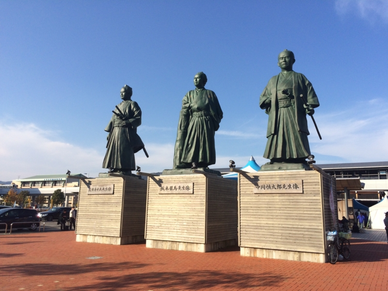
なかじに教えてあげたい航空機事故たちを適当にチョイスしてみた - だるろぐ でも少し書いたけど、先々週、高知まで行った。愛媛松山から、行きは @nakaji 家のクルマで二時間半ほど、帰りは JR で4時間半ほど。四国って割りと広いんだなーと感じる旅立った。
久禮
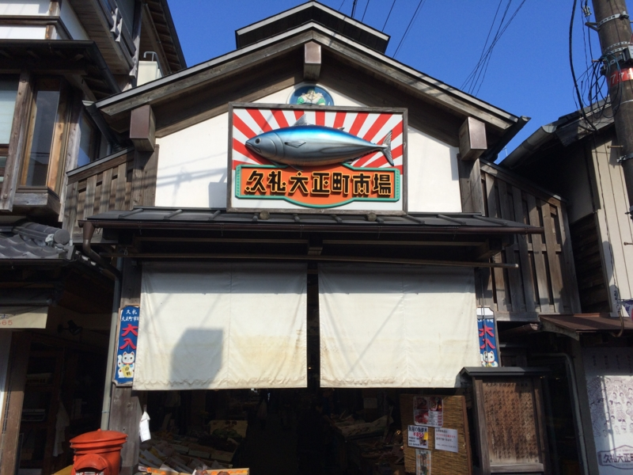
まずは @nakaji の奥さんと妹さんと息子さんに連れられて、久礼へいった。途中、かの仁淀川を渡る。この川の名前を冠して生まれるはずだった「大淀」型二番艦の軽巡洋艦は、ついに生まれなかった（のちに護衛艦として爆誕）。この辺りはお茶や川魚がおいしいらしい。
ここでおいしいカツヲ丼をいただいた。
ちなみに、なぜここが「大正」市場というのかというと、かつてここで大火があったとき、大正天皇陛下が義捐金を下賜されたからなのだそうだ。街を復興したときに、感謝の気持ちを込めて「大正」と名付けたのだという。
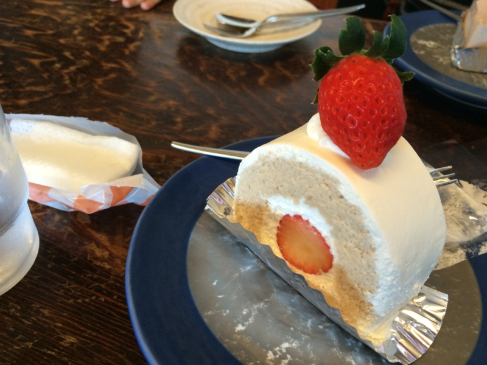
あと、@nakaji の奥さんと妹さんがとても食べたそうにしてたので、なんかスイーツのお店にもよった。季節外れの新鮮なイチゴがさわやかでおいしい。実は生クリームは苦手なのだけど、ここのは割と軽くて、自分でもおいしく食べられた。こういうケーキを食べるなんて、何年振りだろう。おっさんの一人暮らしには無縁なものである。
ひろめ市場
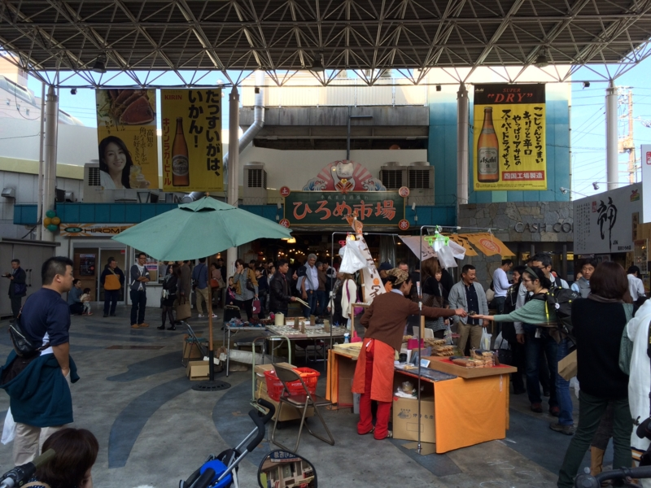
夜は @Toshihiro_SKK 氏を交えて飲んで、二次会にひろめ市場へ行った（写真はお昼の様子）。
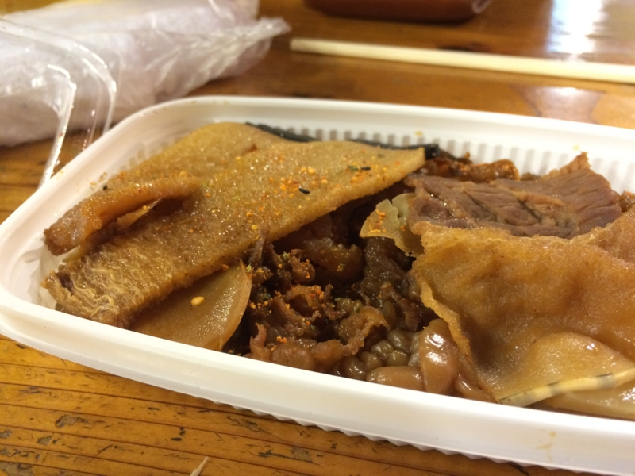
ここでは、適当に魚屋で買った品をアテに呑めるらしい。とりあえず、売れ残ってたクジラの何かをゲット。すっかり冷えてたけど、噛めば噛むほど味があっておいしい。
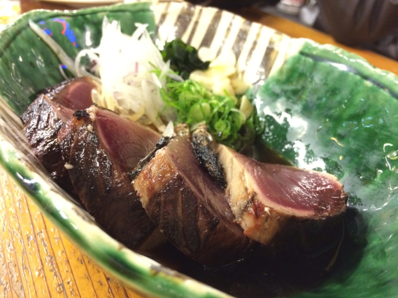
ついでにカツヲのタタキ（さっきさんざん食ったのに！）に、カツヲの握り寿司、カツオの巻き寿司と、食いに食った。
高知は「竜馬しかないんか！（俺は中岡慎太郎のほうが好きだ！）」ってぐらい、あっち行っても竜馬、こっち行っても竜馬でちょっとうんざりしちゃったりもするのだけど、割とこういう猥雑な雰囲気は楽しい。むしろこっち推しにすればいいのになぁ、と思わんでもない。
高知の朝市
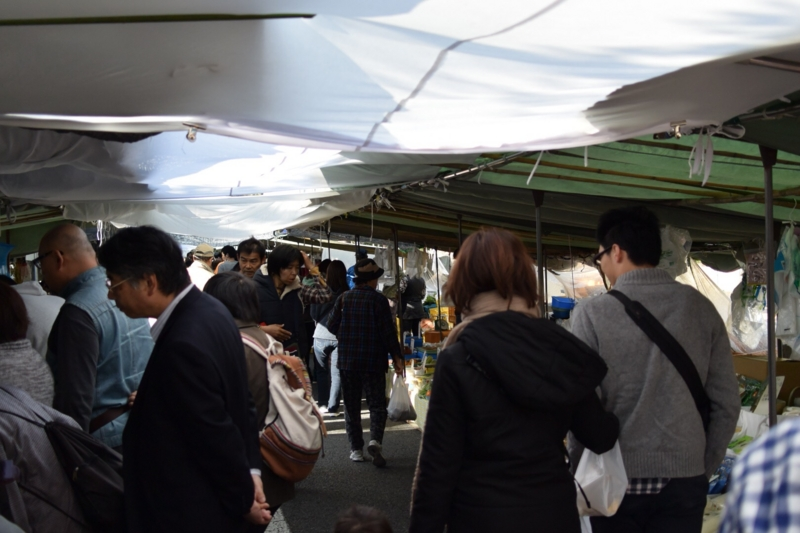
それは次の日の朝に行った朝市でも思った。メインストリートを規制して、延々と市が連なっているさまは割と壮観。白菜も立派だし、小物もかわいい。ひとり暮らしの悲しい身、こういうところで買うものもなんてなにもなかったのだけど（野菜一つとってもおひとりさま向けの量でもないし、一人暮らしで小物など部屋に置かないであろう）、歩いているだけで結構楽しい。
松山にもこういうのあったらいいのになーと思うのだけど、まぁ、あまり似合わないわな。高知ならではって感じ。
高知城
思ったよりデカかった。松山城は市街地の真ん中ににょっきりそびえたっている感じだけれど、高知城はメインストリートのどん詰まりに腰を据えている感じ。で、意外に階段が長い。翌日筋肉痛で死にかけた。
まず出迎えてくれるのは、山之内一豊公。嫁さんの尻に敷かれてたくせに、カッコいい。
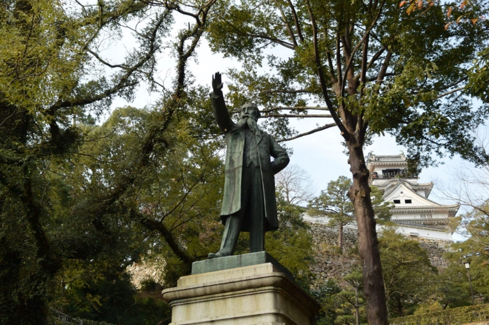
次は板垣退助。退助の癖にカッコいい……（ﾋﾞｸﾝﾋﾞｸﾝ
前にも書いたけど、高知の人は竜馬を持ち上げすぎだ。退助だってすごく頑張ったじゃないか。まぁ、竜馬のほうがドラマチックな人生ではあったのだろうけれど、それ隠れてほかの人に光が当たらないのはちょっと可哀想かなと思う。
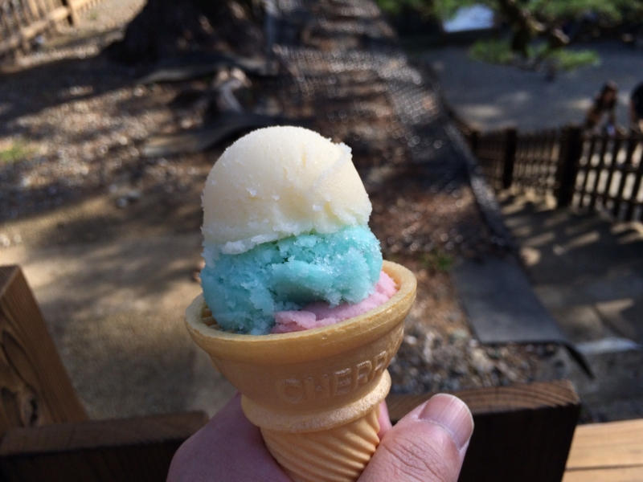
高知城には、至る所に“アイスクリン”が売っている。これは、アイスクリームのコーンにシャーベットがのっているような感じだ。口当たりはさわやかだが、コーンとの相性はアイスクリームに若干劣る。
約一名、ガキんちょがアイスクリンばっかり売っていることに激怒していた。彼に先立って本丸にのぼると、そこでもアイスクリンの屋台が2つもあったので、さぞかし激怒することであろうと思っていたら、案の定、怒髪天を突き破る勢いで激怒していて面白かった。アイスクリンのなにが許せなかったんだろう。自分も昔はこどもだったはずなのに、まったく理解ができなくておかしい。
高知城の展示は、松山城よりも親切で、充実している。藩の歴史が大まかにいくつかの時代に分割され、事細かに年表としてまとめられている。とても分かりやすく、よそ者にも親しみやすい。この辺りは高知を見習った方がいいと感じた。
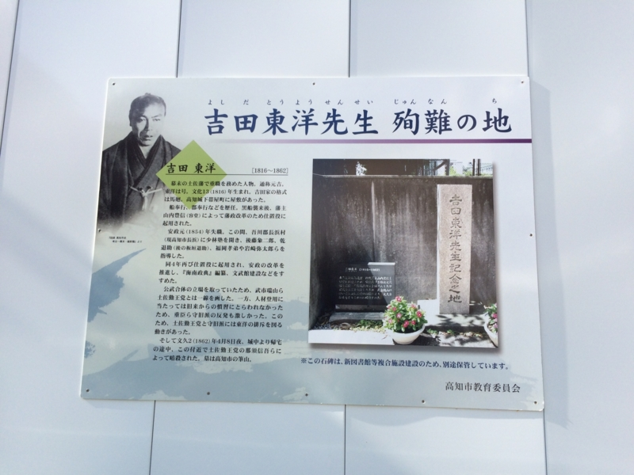
桂浜
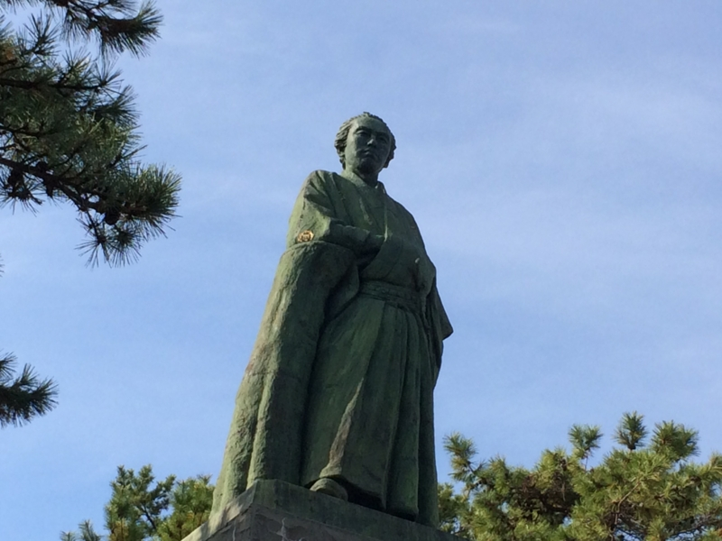
さんざん竜馬を持ち上げすぎと言っておいてなんだけど、ちゃんと桂浜にも行ってきた。
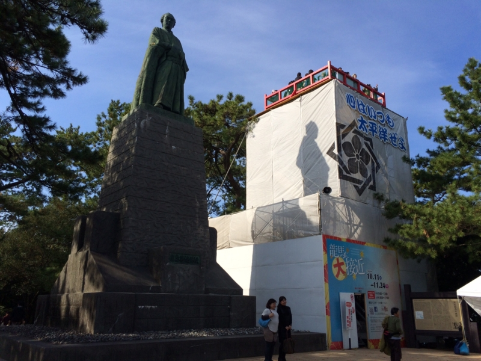
無粋な足場で組み立てられた塔が寄り添っていて、正直、ちょっとげんなりした。この塔にのぼるには、お金が要る。
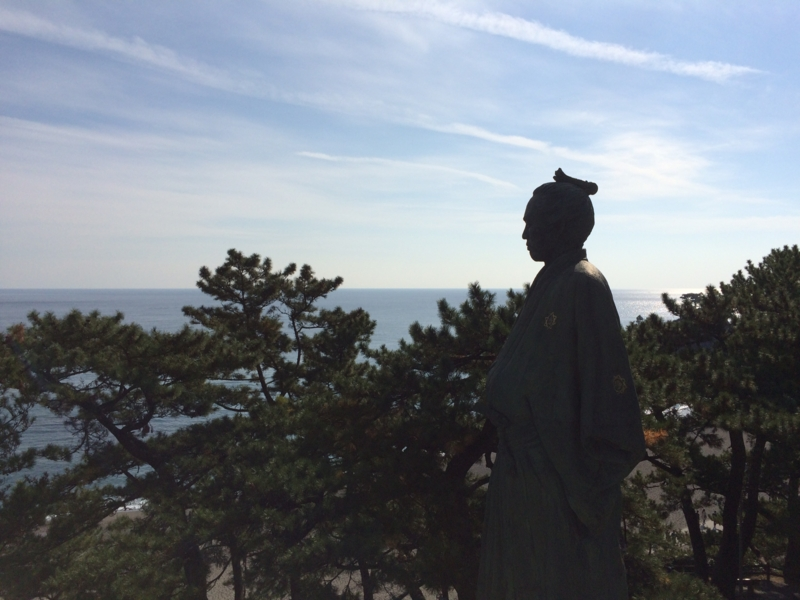
でも、景色がよかったのは正直に認めようと思う。素晴らしい眺めで、竜馬像が邪魔に思えるぐらいだった。
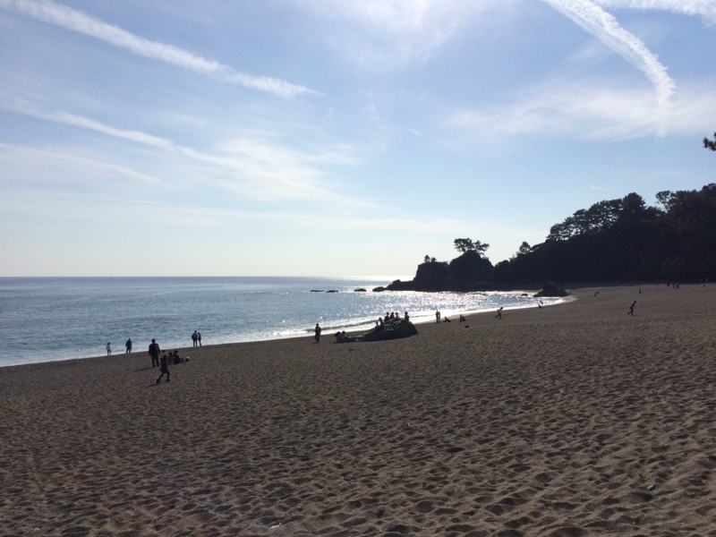
確かにこんな景色見て育ったら、自由な精神がはぐくまれるかもしれない。